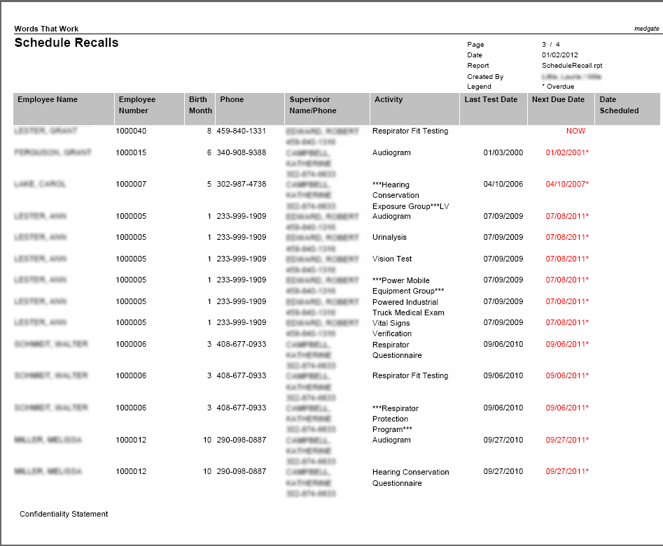
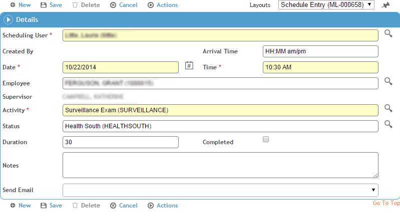
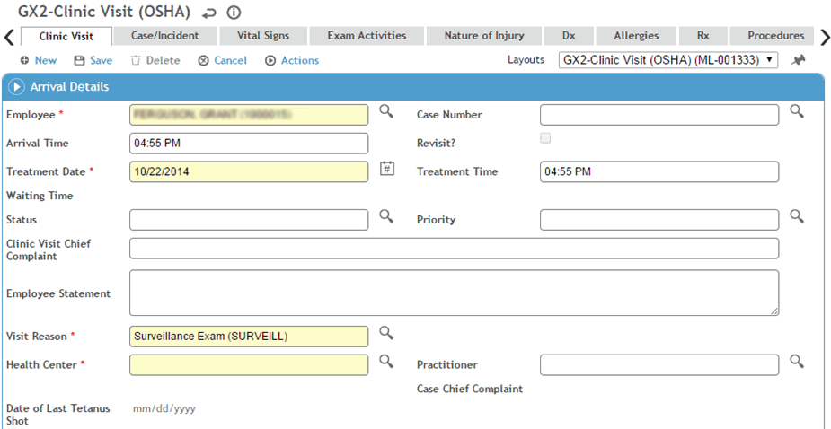
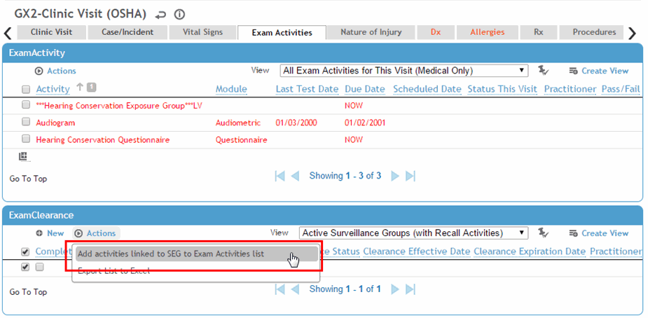
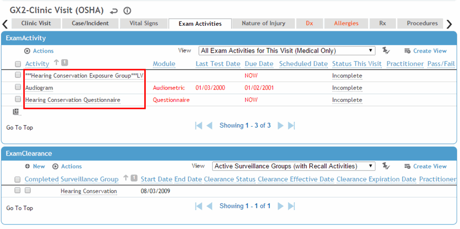
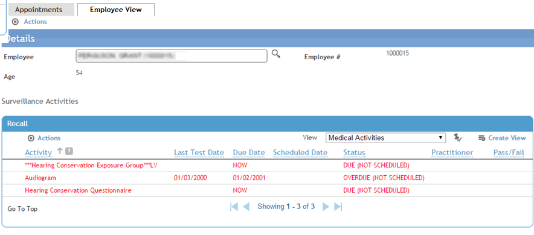

By setting up schedule activities, linking to modules, and associating exam activities with clinic visit reasons, automation of surveillance recalls is possible. A workflow example follows.
Run a Schedule Recalls report for a given date range, due now, etc. to see which employees need which activities.

Schedule an employee for the exam (and click Save).

Choose Actions»Link to open the Clinic Visit module (this is the module the Surveillance activity was linked to in the ScheduleActivity table).

The Clinic Visit Reason is already completed in the Clinic Visit module due to the link from the Appointments module.
On the Exam Activities tab, select the SEG(s) whose activities you want to add to this visit. The activities related to the SEG (as defined in the SimilarExposureGroup look-up table) are added to the top of the form.


On the Employee View in the Appointments module, the surveillance activities are noted below the employee information and are updated as each component is completed, if linked to a module, or by selecting the Completed checkbox for any activities not linked to a module.
